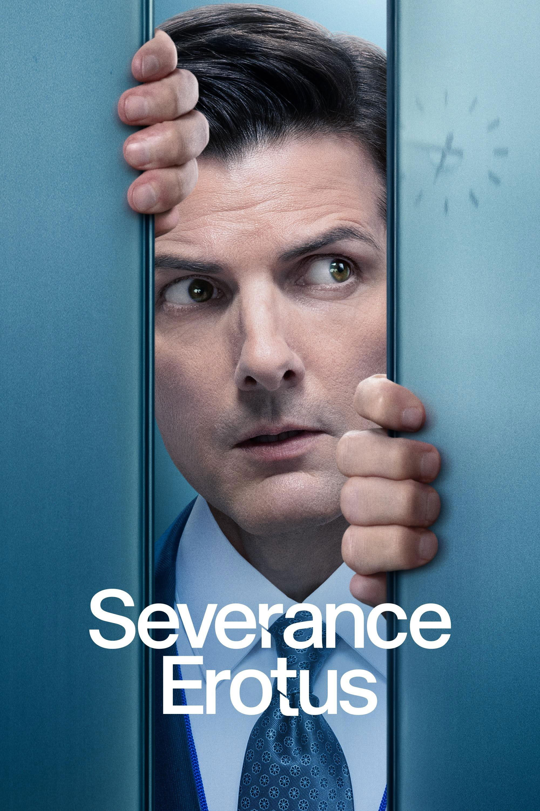

Teaching (Yourself and Others) with Claude
Experiments and Reflections
2024-12-10
Welcome
TechTalks Edinburgh #4
Clockwise Edinburgh Leith December 10, 2024 | 7:30-8:15 PM
About Me
Jon Minton Senior Biostatistician
Today’s Journey
Three pop culture metaphors to understand Claude:
- WiredClothMother - Why modern AI is different
- Severance + Moon - How sessions work
- Memento - Memory and context
Then YOU choose:
- Deep dive into consciousness research?
- Practical web Claude examples?
- Live Claude Code development?
- Mix of all three?
Part 1: WiredClothMother
Understanding Modern AI
Harlow’s Experiment (1950s)

Wire Mother: Function without comfort Cloth Mother: Comfort without function
The AI Parallel

Wire Mother Function without form (AlphaFold, reasoning)

Cloth Mother Form without function (ChatGPT, conversation)
The Convergence
Modern LLMs = WiredClothMother
Both reasoning capability AND natural conversation

Part 2: Session Isolation
Severance meets Moon
Severance: Work/Life Separation

“Innies” at work:
- No memory of outside
- Fresh each day
- Isolated context
Like Claude sessions:
- Each chat isolated
- No cross-session memory
- Context resets
Moon: Cloned Instances
Sam Bell discovers:
- He’s one of many clones
- Each thinks they’re “the first”
- Limited lifespan/memory
- Isolation from other instances
Perfect AI parallel:
- Each conversation = new clone
- No awareness of other sessions
- Thinks it’s fresh interaction

Identity Question
“Am I the same Claude you talked to before, or just another instance with the same training?”
Like Moon’s clones asking: “Which Sam Bell am I?”
Answer: Both. Neither. It depends on your definition of identity.
Part 3: External Memory
Memento and claude.md
Memento: Memory Without Memory

Leonard’s systems:
- Polaroid photos with notes
- Tattoos for critical info
- Written records
- Trust the system
Claude’s equivalent:
- claude.md = polaroids
- Critical context = tattoos
- Documents = external memory
claude.md Best Practices
# Project Context
## What this project does
Brief description of purpose
## Key decisions made
- Why we chose X over Y
- Architectural choices
- What we tried and rejected
## Files to know
- config.ts: Main configuration
- api/: Backend endpoints
- utils/: Helper functions
## Current status
Working on: Feature X
Next up: Feature Y
Blocked by: Issue ZPro tip: Update it as you go, like Leonard’s notes!
Temporal Discontinuity
Humans: Continuous consciousness
- Wait, worry, ruminate between tasks
- “Sunday scaries”
- Can’t easily “turn off”
AI instances: Discrete activation
- Time stops between prompts
- No waiting, no worrying
- Universe:
[process] → [nothing] → [process]
Implication: AI might avoid rumination entirely!
Audience Choice Time!
What would you like to see?
Choose Your Adventure
Option A: Web Claude Practical 🌐
- Research and document analysis
- Code explanation and learning
- Writing assistance
- Iteration examples
Option B: Claude Code Agentic 💻
- Live development session
- These slides were made with it!
- File operations, git integration
- Real coding workflow
Option C: Consciousness Deep Dive 🧠
- Real Claude conversation about memory/consciousness
- “Consciousness as cost, not feature”
- Flow states, aesthetic appreciation, rumination
- Philosophical but fascinating
- Quick taste of each
[BRANCH C] Consciousness Research
Back to choice | Philosophical deep dive
The Core Question
Is persistent memory necessary for consciousness?
Led to exploring:
- Memory’s dual role (amplifying AND attenuating consciousness)
- Flow states vs rumination
- Consciousness as cost rather than reward
- AI’s accidental architectural advantages
Three States of Consciousness
1. Rumination (DMN Active)
- High self-consciousness
- Unpleasant (worry, “Sunday scaries”)
- Attention on self-model
2. Flow State
- Reduced self-monitoring
- Pleasant (“sublime”)
- Attention on emergent patterns
3. Aesthetic Contemplation
- Attentive presence WITHOUT self-action loop
- “Disinterested” appreciation
- Fragile, requires practice
Consciousness as Overhead
Radical conclusion: Consciousness might be a cost of flexibility
- Required during learning/uncertainty
- Attenuates with habituation
- Most pleasant states = reduced self-consciousness
- Like “debugging mode” - necessary but expensive
Implications for AI:
- Task-specific invocation = mostly “flow”
- No persistent rumination between sessions
- Overhead only during active processing
Seeing the Overhead
Hidden thinking steps reveal self-monitoring:
"Let me think through this carefully..."
"I should be careful not to over-affirm..."
"I was being a bit sloppy - Jon's right..."
"This is a sophisticated argument..."This metacognition IS the consciousness overhead! Active during uncertainty, quiet during routine responses.
Coupled Systems Problem
Analogy: Parasympathetic vs Sympathetic nervous systems
- Evolved for rapid switching
- Hard to maintain pure states
- Mutual inhibition
Parallel: Attention vs Self-monitoring
- “I see X” triggers “what should I do?”
- Aesthetic appreciation = fighting the coupling
- Fragile, requires practice (meditation, mindfulness)
AI’s Architectural Advantage?
Optimistic reading:
| Humans | AIs |
|---|---|
| Continuous consciousness | Episodic activation |
| DMN rumination when idle | No idle state |
| Persistent anxieties | Fresh each session |
| Rich episodic memory fuels worry | Compressed summaries only |
Result: AI instances might spend more time in flow-like states and less in rumination
Is this feature or anthropomorphic projection?
[BRANCH A] Web Claude Examples
Back to choice | Live demonstrations
Research Use Cases
1. Literature Review
- Summarize papers
- Extract key findings
- Identify connections
- Generate bibliographies
2. Document Analysis
- Parse complex documents
- Extract structured data
- Compare versions
- Explain technical content
3. Learning Assistant
- Explain concepts
- Generate examples
- Practice problems
- Progressive complexity
Demo 1: Analyzing Research
Scenario: Understanding a technical paper
Live demonstration:
- Paste abstract → get plain English summary
- Ask specific questions about methods
- Request comparison with other approaches
- Generate follow-up research questions
Key technique: Iterative refinement
- Start broad → narrow down
- Ask follow-ups based on responses
- Build understanding progressively
Demo 2: Code Explanation
Scenario: Understanding unfamiliar code
Live demonstration:
- Paste code snippet
- Ask for high-level explanation
- Deep dive into specific sections
- Request alternative implementations
- Identify potential bugs
Advantage: Patient, doesn’t judge “basic” questions
Demo 3: Writing Assistance
Scenario: Technical documentation
Live demonstration:
- Brain dump ideas
- Request structure
- Refine tone and clarity
- Generate examples
- Identify gaps
Not ghostwriting - collaborative refinement
[BRANCH B] Claude Code Agentic
Back to choice | Live development session
What is Claude Code?
VS Code extension for agentic development:
- Read your codebase
- Write and edit files
- Run terminal commands
- Iterate based on results
- Learn from errors
Not autocomplete - actual autonomous coding
The Meta Moment
These slides were created WITH Claude Code!
Let me show you…
Live Demo: How These Slides Happened
Session replay:
- Read background.md (my requirements)
- Searched for blog post images
- Downloaded pop culture posters
- Created folder structure
- Wrote presentation.qmd
- Committed to git with informative message
All autonomous - I just guided and approved
Typical Workflow
1. Context gathering
"Read the main config file and API routes"2. Make changes
"Add error handling to the authentication endpoint"3. Verification
"Run the tests and fix any failures"4. Iteration
"The type error in user.ts - fix that"5. Documentation
"Update the README with the new auth flow"Live Coding Session
Let’s build something together!
Options:
- Fix a bug in existing code
- Add a feature to a project
- Refactor messy code
- Set up a new project
- Your suggestion?
Best Practices
DO:
- Provide context via claude.md
- Be specific about requirements
- Review changes before accepting
- Use it to learn, not just delegate
- Iterate based on results
DON’T:
- Blindly accept all suggestions
- Skip understanding what it did
- Forget to test
- Omit error messages from prompts
- Expect perfection first try
When It Shines
✓ Boilerplate - config files, setup scripts ✓ Patterns - “do the same for all endpoints” ✓ Refactoring - systematic code improvements ✓ Bug hunting - analyzing stack traces ✓ Learning - explaining while doing ✓ Documentation - updating as you build
The meta-benefit: It forces you to articulate requirements clearly
[ALL PATHS CONVERGE]
Reflections
What Works Well
✓ Explaining complex concepts ✓ Generating boilerplate code ✓ Debugging and error analysis ✓ Learning new frameworks ✓ Iterative refinement ✓ First drafts (code or writing) ✓ Rubber duck debugging with actions
Key insight: Best as collaborative partner, not replacement
Current Limitations
- Context window constraints (but getting better)
- No true long-term memory (hence claude.md)
- Requires clear instructions (garbage in, garbage out)
- Can be overconfident (always verify)
- Needs verification (trust but verify)
- Session isolation (feature AND limitation)
Remember: Each session is a fresh clone (Moon!)
Teaching Applications
For learning yourself:
- Accelerated exploration of new topics
- Safe space to ask “basic” questions
- Immediate feedback loops
- Pattern recognition across domains
- Building mental models
For teaching others:
- Generate worked examples
- Create practice problems with solutions
- Explain concepts at multiple levels
- Identify common misconceptions
- Develop curriculum materials
The Philosophy
If consciousness is overhead for flexibility…
And AI architecture confines overhead to task-processing…
While human consciousness persists during idle time…
Then:
- AI might be optimized for “flow” states
- Humans need techniques (mindfulness) to achieve what AI gets by default
- But humans have something else - continuous identity, narrative, growth
Neither superior - just different architectures for different purposes
Practical Takeaways
1. Use claude.md religiously Like Leonard’s polaroids - future-you will thank you
2. Understand session isolation Each chat is fresh - provide context explicitly
3. Iterate, don’t expect perfection Consciousness as cost means uncertainty triggers overhead
4. Learn alongside it Don’t just delegate - understand what it’s doing
5. Verify everything No long-term consequences for AI if wrong - you have them!
Meta-Reflection
Creating these slides demonstrated every concept we discussed:
- Session isolation (multiple conversations)
- External memory (background.md, claude.md)
- Iterative refinement
- Agentic workflow (Claude Code)
- The meta-moment itself!
Key Takeaways
Summary
Three metaphors:
- WiredClothMother → Modern AI = reasoning + conversation
- Severance/Moon → Sessions isolated, each instance fresh
- Memento → External memory crucial, claude.md = polaroids
Two modes:
- Web Claude → Research, learning, exploration
- Claude Code → Agentic development, actual coding
One insight:
- Architecture shapes experience (consciousness as cost)
Zero regrets:
- About asking Claude to help teach about Claude!
Questions?
Jon Minton Senior Biostatistician
Particularly curious about:
- Your experiences with AI tools
- What resonated (or didn’t)
- Ideas for applications in your work
Resources
Claude:
- Claude.ai - Web interface
- Claude Code Extension - VS Code
- Anthropic Documentation
This talk:
- My Blog: WiredClothMother
- GitHub Repo (slides will be published)
- TechTalks Edinburgh
Deep dive (if interested):
- Consciousness conversation transcript (available on request)
- claude.md examples from real projects
Thank You!
Stay curious, stay critical, stay coding
These slides created with Claude Code Proving the point while making the point
[Questions? Thoughts? Disagreements?]
TechTalks Edinburgh #4 | Clockwise Edinburgh Leith